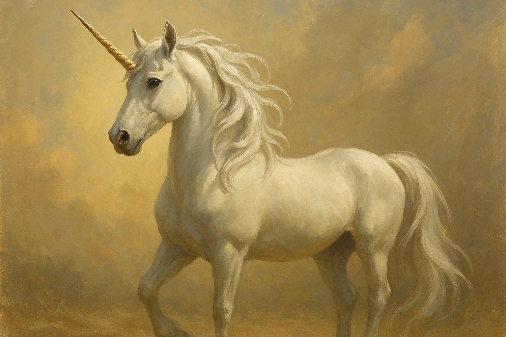

6
Team Members
2
Tools Created
100%
Commitment
Our Mission
We're 6 girls with a 💜 for science 🔬 and archaeology 🕵️♀️. Our passion is to turn dreams into discoveries using technology 👩💻. We power our ideas through a curiosity, creativity, and collaboration.

Anjini
🎨 Drawing
AI Vision Researcher
Identifying and applying AI models for image artifact detection.
Akshara
🎭 Acting in theater
Drone Path Planner
Understanding how to get the drone to fly in a specific path and
building it.

Ada
🎻 Playing Violin
Drone Researcher
Researched different types of drones and worked on complete
analysis.

Rena
🎹 Playing piano
Drone Researcher
Researched different types of drones and worked on complete
analysis.

Akalya
🥋 Martial Arts
AI Vision Researcher
Identifying and applying AI models for image artifact detection.

Allie
🤸 Gymnastics
Drone Path Planner
Understanding how to get the drone to fly in a specific path and
building it.